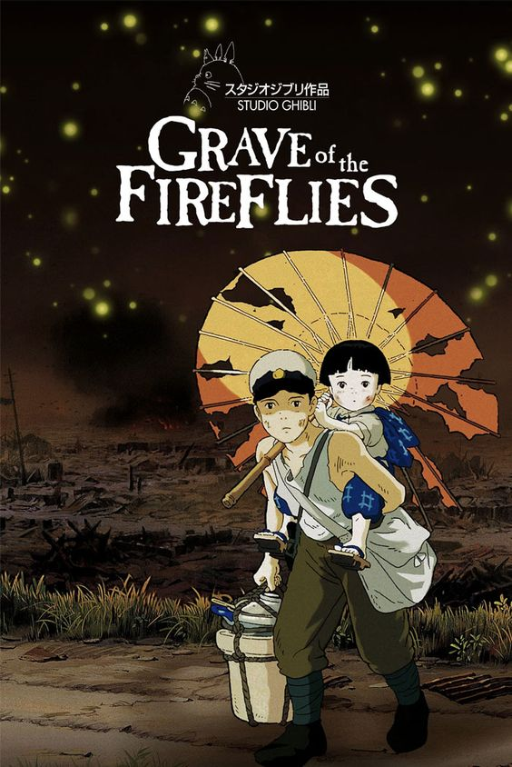
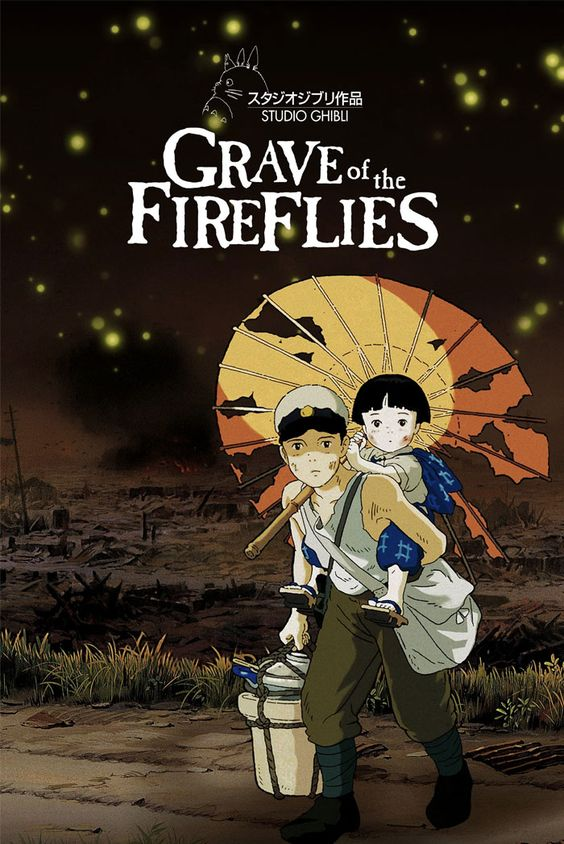
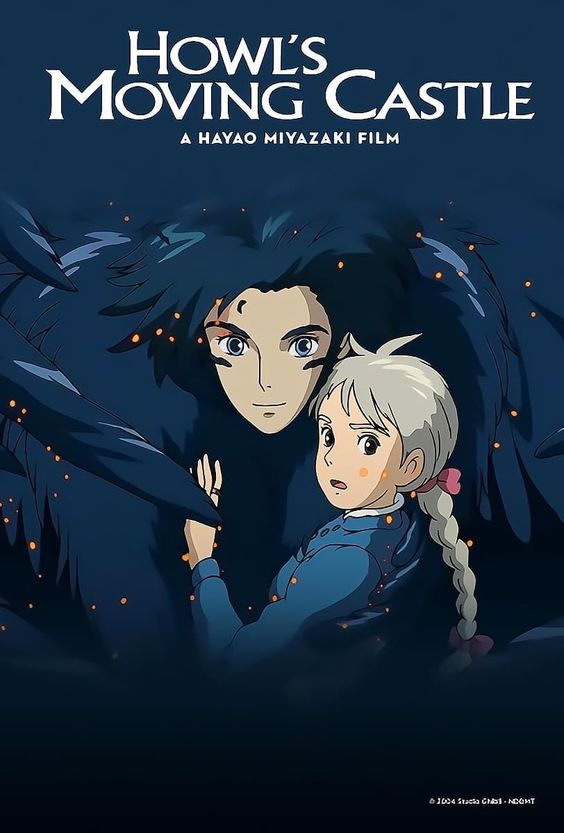
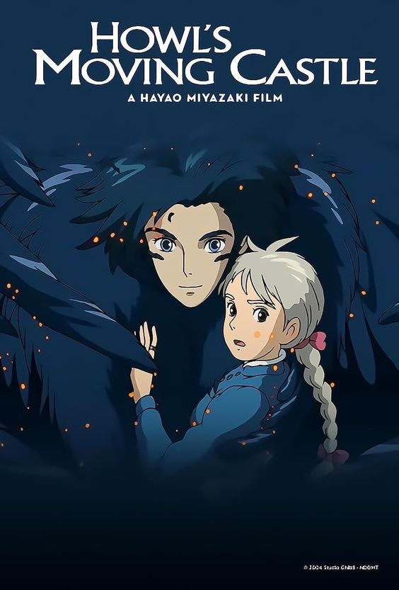

Dive into various experiences given by magic of these movies.

 

 


 Studio Ghibli is a renowned animation studio based in Japan, known for creating some of the most captivating and imaginative animated films in the world. Founded in 1985 by the visionary directors Hayao Miyazaki and Isao Takahata, Studio Ghibli has left an indelible mark on the world of animation.
One of the key features that sets Studio Ghibli apart from other animation studios is its commitment to hand-drawn animation. In an era dominated by computer-generated imagery (CGI), Ghibli's dedication to traditional animation techniques stands out. Each frame of a Ghibli film is a work of art, meticulously crafted by skilled animators. The attention to detail and the vivid, lush visuals are a testament to the studio's unwavering dedication to their craft.
Studio Ghibli's storytelling is equally exceptional. Their films are often characterized by richly developed characters, intricate plots, and a strong connection to nature and environmental themes. Ghibli's stories explore a wide range of emotions, from the whimsical and heartwarming to the deeply emotional and thought-provoking. Films like "Spirited Away," "My Neighbor Totoro," and "Princess Mononoke" have resonated with audiences of all ages and have become timeless classics.
Studio Ghibli is a renowned animation studio based in Japan, known for creating some of the most captivating and imaginative animated films in the world. Founded in 1985 by the visionary directors Hayao Miyazaki and Isao Takahata, Studio Ghibli has left an indelible mark on the world of animation.
One of the key features that sets Studio Ghibli apart from other animation studios is its commitment to hand-drawn animation. In an era dominated by computer-generated imagery (CGI), Ghibli's dedication to traditional animation techniques stands out. Each frame of a Ghibli film is a work of art, meticulously crafted by skilled animators. The attention to detail and the vivid, lush visuals are a testament to the studio's unwavering dedication to their craft.
Studio Ghibli's storytelling is equally exceptional. Their films are often characterized by richly developed characters, intricate plots, and a strong connection to nature and environmental themes. Ghibli's stories explore a wide range of emotions, from the whimsical and heartwarming to the deeply emotional and thought-provoking. Films like "Spirited Away," "My Neighbor Totoro," and "Princess Mononoke" have resonated with audiences of all ages and have become timeless classics.